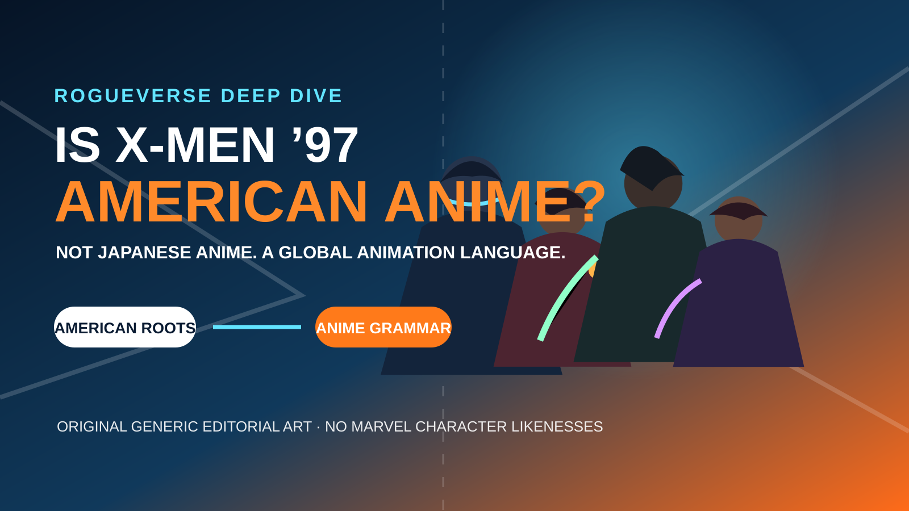

OUR CULTURE · ANIMATION / DEEP DIVE • AUGUST 17, 2026
Is X-Men ’97 American Anime?
The mutant revival is officially American animation. But its creators openly acknowledge Japanese-animation influences, its production crosses borders, and its visual grammar speaks fluently to anime audiences. Is “American anime” becoming a useful label?


There is a moment when watching X-Men ’97 where the question sneaks up on you.
Maybe it happens when Cyclops stops behaving like a superhero who simply points his face at a target and starts using his optic blasts as recoil, movement, precision control and battlefield geometry. Maybe it is Storm turning raw power into something almost mythological. Maybe it is the camera snapping into a dramatic close-up, the colors changing, the soundtrack swelling and a superhero fight suddenly feeling closer to a climactic battle-anime sequence than the Saturday-morning cartoons American television once treated as the genre’s ceiling.
Somewhere between the heightened melodrama, emotionally expressive powers, impossible attacks and elaborate combat choreography, a provocative question appears: are we watching an American cartoon that happens to borrow from anime, or are we watching the emergence of a genuinely hybrid form?
Technically, the first answer is safer. X-Men ’97 is a Marvel Animation production, continuing the American X-Men: The Animated Series lineage. But stopping there ignores what members of the production have actually said about their influences, and it ignores how thoroughly global animation has become.
RogueVerse’s argument is not that X-Men ’97 should suddenly be filed beside Japanese television productions because it has speed lines. The stronger argument is that “anime” increasingly operates in more than one way: as an industry of origin, as a cultural tradition, and as a creative language that artists around the world now speak.
First, We Have to Define Anime
The debate becomes messy because the word “anime” does not carry exactly the same boundaries everywhere.
In Japanese usage, anime is an abbreviation derived from “animation” and can be used broadly for animated works. In English-language fandom, however, the word usually identifies animation originating in Japan or closely tied to the Japanese animation industry. Anime historian Jonathan Clements and other scholars generally preserve that origin-based distinction when discussing anime as a cultural and industrial form.
Under the strict English-language definition, X-Men ’97 is not anime. Marvel presents it as a Marvel Animation series and as a continuation of the 1990s American show. Disney does the same. There is no serious claim here that Marvel quietly produced a Japanese television anime.
But there is a third use of the word that has become difficult to ignore: anime as a visual and narrative language.
That language includes many things that are not reducible to one drawing style. It can include strategic use of limited animation, impact frames, highly expressive close-ups, sudden bursts of fluid movement, stylized power effects, emotionally heightened transformations, cinematic compositions, and a willingness to let combat reveal psychology and philosophy rather than merely settle who punches harder.
Once we separate “anime the Japanese industry” from “anime the creative language,” X-Men ’97 becomes much more interesting.
The Anime Influence Is Not Fan Projection
The strongest part of the case is that the connection is documented.
Directors Emi Yonemura and Chase Conley have discussed looking toward Japanese animation when developing X-Men ’97. In an interview about the revival’s visual influences, they described studying what Japanese animators accomplished under television constraints and connected that lineage back to original-series director Larry Houston. Conley specifically recalled Houston’s interest in Japanese animation such as Ninja Scroll, and framed the revival as an opportunity to realize kinds of visual ambition that the earlier production could not always afford to execute.
Supervising director Jake Castorena has described a related research process. While building a show that needed to feel authentically connected to the late 1990s without looking technically trapped there, he studied filmmaking and animation from roughly the 1996–1998 period. That research included anime alongside American television animation, feature animation and live-action filmmaking.
Castorena has also invoked Dragon Ball Z when talking about the cultural vocabulary that shaped his generation. That matters because it reframes the usual “East influenced West” story. The people making modern American animation are often people who grew up with American superheroes and Japanese anime at the same time. Those influences no longer live in separate rooms in their heads.
The anime connection does not begin with X-Men ’97. The revival makes an older influence easier to see.
This is why describing the show as merely “anime-looking” is too shallow. The production did not accidentally stumble into an anime-flavored fight scene. Japanese animation was part of the creative research and part of the artistic ancestry of people shaping the series.
The Secret Ingredient Is Not Big Eyes
One of the weakest ways to identify anime is to reduce it to surface traits.
Big eyes? Anime. Spiky hair? Anime. Speed lines? Anime. Someone screams while glowing? Apparently the border patrol has been notified.
That approach collapses an enormous medium into a handful of clichés. Dragon Ball, Akira, Cowboy Bebop, Ghost in the Shell, Crayon Shin-chan, Ping Pong the Animation, Demon Slayer and JoJo’s Bizarre Adventure do not share one universal visual style. The meaningful similarities are often structural, cinematic or cultural rather than facial.
So the better test is visual grammar. How does the show communicate impact? How does it use stillness? When does it exaggerate? How does it turn a superpower into personality? Does a fight exist simply to fill runtime, or does it tell us something about the people fighting?
That is where X-Men ’97 becomes fluent.
Combat Is Character
Superhero animation has always contained fights. What changes in X-Men ’97 is the degree to which fighting styles become characterization.
Cyclops is the easiest example. His optic blasts are technically simple, but the show treats them as a system rather than a button. He uses them for precision targeting, ricochet angles, recoil-assisted movement, battlefield control and environmental manipulation. The ability did not suddenly gain a dozen new powers. The choreography became more interested in mastery.
That is a pleasure battle manga and anime have been cultivating for decades. A seemingly basic ability becomes fascinating when a character understands it better than the audience does. The excitement comes from discovering applications rather than merely increasing the size of the explosion.
Storm works differently because her abilities express a different personality. Her power can become majestic, terrifying, spiritual or intimate depending on the emotional beat. Gambit’s kinetic charge is inseparable from his swagger. Nightcrawler’s teleportation invites movement built around timing and spatial awareness. Magneto’s control of metal becomes both spectacle and ideology because his power is tied to the way he sees the world.
Castorena has argued that action should advance narrative rather than exist as decoration. That philosophy is visible throughout the series. The fight tells you who the person is.
The Power-Up Crossed the Pacific Years Ago
Anime audiences know the ritual: someone reaches a psychological breaking point, music rises, visual language changes and power becomes the external shape of an internal transformation.
The important part is not that a character becomes stronger. It is that emotion becomes visible.
X-Men ’97 repeatedly approaches mutant abilities with that same instinct. Power is punctuation. A character’s emotional state can change the staging, color, scale and rhythm of the scene. The spectacle works because the person matters first.
Storm is especially compatible with this tradition. Her abilities have always been grand enough to feel mythological, but the revival often stages them with a sense of awakening and emotional release that anime viewers recognize immediately. That does not make Storm a Japanese character. It means a creative grammar developed and refined heavily within anime has become available to American superhero storytelling.
Melodrama Is a Feature, Not a Bug
X-Men ’97 is also gloriously unafraid of melodrama.
Love triangles, betrayals, ideological arguments, identity crises, family fractures, enormous declarations and grief are allowed to be enormous. The show does not constantly puncture sincerity with a joke because it is worried the audience might notice that superheroes are emotional.
This quality is not uniquely anime. The X-Men comics themselves have always operated somewhere between superhero epic, civil-rights allegory, soap opera and science-fiction fever dream. But anime has long demonstrated that animated storytelling can embrace emotional maximalism without apologizing for being animated.
Characters can cry, scream, confess, grieve and make impossible promises while the direction treats their feelings as real. X-Men ’97 shares that fearlessness. It lets animated people mean things loudly.
The Camera Has Learned Anime
Anime’s influence is also visible in how movement is rationed.
Japanese television animation has spent decades creating intensity under severe production constraints. A scene does not need every object moving constantly. Directors can build force through silhouettes, extreme close-ups, held poses, dramatic foreground objects, speed backgrounds, abstract color fields, reaction shots, unusual angles and then a sudden burst of expensive motion exactly where it matters.
The rhythm can be still, still, still, then move.
X-Men ’97 often understands that rhythm. Its biggest moments feel powerful not simply because more frames are moving, but because movement has been staged as an event. The show knows when to hold and when to detonate.
That is a much more meaningful anime connection than whether a character’s eyes are drawn a certain way.
Then There Is Studio Mir
The geography of the production makes the old categories even messier.
Studio Mir, based in South Korea, worked on X-Men ’97 and publicly lists the series among its projects. The intellectual property is American. Marvel is American. The superhero-comic tradition feeding the adaptation is American. The production also draws on Japanese animation as an acknowledged influence, while major animation work comes through a South Korean studio.
So what nationality is the image on your screen?
The honest answer is that modern animation is often international long before the viewer presses play.
This does not mean national traditions are meaningless. Japan’s animation industry has its own history, labor structures, studio culture and visual traditions. Korea has its own animation history and an increasingly visible creative identity. American animation has its own lineage. The point is not to flatten them into one culture.
The point is that those cultures have been exchanging techniques, workers, influences and audiences for decades. The traffic is now too heavy to pretend the roads are separate.
Anime Has Already Won the Influence War
There was a time when American fans had to hunt for anime through specialty shops, imported tapes, fan subtitling, late-night television blocks and conventions. Then Toonami, Adult Swim, DVD and eventually streaming demolished most of the barriers.
The children who watched Dragon Ball Z, Sailor Moon, Naruto, Cowboy Bebop, Gundam, Yu Yu Hakusho, Pokémon and hundreds of other series grew up.
Some became animators. Some became storyboard artists. Some became directors. Some became writers and producers. Some went to work on American superhero shows.
That influence does not disappear when someone clocks in at an American studio. It comes with them.
This may be the most useful way to understand X-Men ’97. It is not necessarily American animation trying to become anime. It is American animation made by a generation for whom anime was already part of animation.
Why X-Men Fits This Language So Naturally
Of all major American superhero properties, the X-Men may be unusually compatible with battle-anime grammar.
They are a large ensemble. Each character has a distinctive special ability. Powers can evolve. Characters train. Team combinations matter. Mentorship matters. Rivalries matter. Former enemies become allies. Allies become ideological opponents. Romantic relationships can destabilize entire teams. Older generations train younger ones. Secret schools, clones, robots, space empires, alternate futures, resurrections and cosmic entities are all normal Tuesday material.
The mutant abilities themselves almost behave like a battle system. Cyclops has a high-output ranged ability whose tactical value increases with precision. Nightcrawler has mobility that demands spatial awareness. Rogue’s absorption has both strategic potential and emotional cost. Gambit transforms ordinary objects into weapons. Magneto’s environment can determine the scale of his options. Storm controls an enormous area but the scale of her power can create moral and physical consequences.
The fun is not merely “who has the biggest number?” The fun is “how can this ability be used?”
That is one of battle manga’s great pleasures, and X-Men ’97 is unusually good at accessing it.
Is X-Men ’97 Shonen?
Technically, no. “Shonen” is a Japanese publishing demographic, primarily identifying manga marketed to adolescent boys. X-Men ’97 is not serialized in a Japanese shonen magazine.
But Western fandom also uses “shonen” informally as shorthand for a recognizable cluster of conventions: rivalries, teamwork, creative powers, training, escalation, emotional breakthroughs and spectacular confrontations.
Under that casual usage, parts of X-Men ’97 are undeniably shonen-flavored.
This mirrors the larger anime debate. Technical categories and cultural vocabulary are no longer perfectly aligned.
The Best Objection: If This Is Anime, Is Everything Anime?
This is the argument that prevents “American anime” from becoming a useless marketing sticker.
If anime simply means “animation with dynamic action,” then the category tells us nothing. Is The Simpsons anime? South Park? Bluey? Every Disney feature?
RogueVerse’s answer is that the phrase only works when it communicates a meaningful hybrid lineage. “American anime” should not mean any animated work produced in America. It should identify American-developed animation that substantially participates in traditions associated with anime through its staging, storytelling, action philosophy, visual grammar and acknowledged creative influences.
That is narrower than “everything animated.” It is broader than “only works literally produced inside Japan.”
We Have Seen This Argument Before
Avatar: The Last Airbender, The Legend of Korra, Castlevania, The Boondocks and more recently My Adventures with Superman have all lived somewhere near this argument.
Some viewers insist that if a work was not produced as part of Japan’s anime industry, it is not anime. That position protects a culturally and industrially specific term.
Others use anime stylistically, arguing that artistic traditions migrate and eventually create new regional forms.
Those positions often talk past each other because they are answering different questions.
One asks where the work was made. The other asks what artistic traditions the work participates in.
X-Men ’97 gives us different answers to those two questions, and both answers matter.
Why Protecting the Japanese Meaning Still Matters
There is a genuine danger in expanding “anime” so aggressively that Japan disappears from its own cultural form.
Anime did not materialize from a cloud of universal aesthetics. Its history developed through Japanese artists, studios, television systems, manga traditions, economic pressures and cultural circumstances. Those origins should not be erased simply because global audiences fell in love with the results.
So this article is not arguing that “anime” should stop identifying Japanese animation.
Instead, categories can branch.
Art forms frequently begin in specific cultural contexts and later become global languages. The origin remains important even as descendants multiply. A hybrid descriptor can acknowledge both the source tradition and the new context.
Anime as a Language
This is ultimately the framework that makes the most sense.
Think of anime less as one visual appearance and more as a language. Japan developed enormous parts of its vocabulary. Other cultures encountered it. Some borrowed phrases. Some became fluent. Some developed accents. Some invented new dialects.
X-Men ’97 speaks American superhero animation natively.
But it also speaks anime.
Not because fans decided to award it honorary citizenship, but because members of its own creative team have openly described Japanese animation as part of their influences and research.
That does not make the series Japanese. It makes the work culturally bilingual.
Maybe “American anime” is simply a name for that dialect.
Season 2 Makes the Conversation Harder to Ignore
As of August 17, 2026, X-Men ’97 is no longer a one-season experiment. Marvel Animation premiered Season 2 on Disney+ on July 1, 2026, and Disney’s published schedules show new episodes continuing through July and August.
That matters because the aesthetic conversation is no longer about one unusually ambitious revival season. X-Men ’97 is now an ongoing example of what Marvel Animation can look like when superhero animation embraces heightened 2D storytelling instead of behaving like a cheaper understudy for live action.
If audiences continue responding to that visual language, other productions will learn from it. Then creators raised on those productions will build something else. The feedback loop continues.
This Is Also a Generational Shift
A child today can consume Marvel, Naruto, Pixar, Demon Slayer, DC, One Piece, Studio Ghibli, Korean webtoons, Chinese animation, independent YouTube projects and game cinematics in the same week.
Their creative vocabulary does not respect the borders our old genre labels were built around.
In twenty years, those children become artists. What exactly are they supposed to make: “pure” American animation? Pure according to whom?
Creators make work from what shaped them, and what shapes them now comes from everywhere.
The X-Men Are the Perfect Symbol for the Argument
There is something almost too appropriate about the X-Men sitting in the center of a taxonomy fight.
This is a franchise about people society struggles to categorize: human, mutant, hero, threat, family, outsider. Its mythology repeatedly examines what happens when labels become more important than people.
Now the animated series itself inspires a nerdier identity crisis.
Cartoon? Anime? American animation? Anime-inspired superhero series?
Maybe hybridity is not a problem that needs solving. Maybe it is the feature.
The RogueVerse Anime Spectrum
Instead of forcing every production into a binary “anime / not anime” box, a spectrum can preserve origin while still describing influence.
Under this model, X-Men ’97 sits comfortably in the overlapping territory between American anime and anime-adjacent global animation.
Not because it has speed lines.
Because its creative lineage is documented, its techniques are visible, and its production itself reflects the international reality of modern animation.
Why This Debate Actually Matters
It would be easy to dismiss all of this as fandom taxonomy. Call it anime. Call it a cartoon. Call it Fred. The episodes do not change.
But terminology shapes how cultures understand art.
For decades, Western animation and anime were often treated as separate worlds. Western television animation was culturally associated with children and comedy. Anime became associated with serialization, mature themes, genre diversity and stylized action. Those stereotypes were never completely accurate, but they shaped expectations.
Now the walls are crumbling. Western animation increasingly embraces serialized drama. Anime reaches enormous international audiences. Korean webtoons move into Japanese and Western adaptation pipelines. American comics inspire manga. Manga inspires American comics. Video games borrow from all of it. Studios collaborate across continents.
The medium is becoming global by default.
X-Men ’97 matters because you can see that transition happening on screen.
A Mutant Form of Animation
Maybe the most fitting description is that X-Men ’97 is itself a mutation.
The DNA is recognizable: Marvel comics, 1990s television animation, Saturday mornings and the visual identity of the classic X-Men era.
But new material has entered the genome: Japanese action staging, anime-influenced cinematography, Korean animation expertise, modern digital production, streaming-era serialization, adult dramatic expectations and internet-era global fandom.
The result resembles its ancestor while doing things the ancestor could not do at the same scale.
That is basically the premise of mutation.
Final Verdict: RogueVerse Classifies X-Men ’97 as “American Anime”
Is X-Men ’97 Japanese anime?
No.
Is it officially classified by Marvel as anime?
No.
Is its anime influence documented?
Yes.
Does it participate meaningfully in visual and storytelling traditions that anime helped globalize?
Yes.
ROGUEVERSE VERDICT
X-Men ’97 is not Japanese anime. But as a cultural descriptor, “American anime” is defensible: American superhero storytelling that has absorbed anime deeply enough for the influence to function as part of its language rather than as decoration.
That label is not meant to replace “anime,” erase Japan, or pretend national production histories no longer matter. It is meant to name a hybrid that already exists.
Anime changed global animation. Global animation is now changing how audiences talk about anime.
And standing in the middle of that evolution is a team of mutants who were never especially interested in fitting neatly inside somebody else’s categories.
The more interesting question may no longer be “Does America make anime?” It may be “When did we stop noticing that it already speaks the language?”
Sources & Further Reading
- Marvel: X-Men ’97 Season 2 trailer and July 1, 2026 premiere
- Disney+ Press: July 2026 schedule
- Disney+ Press: August 2026 schedule
- Marvel: Jake Castorena and Dana Vasquez-Eberhardt on the show’s comic inspirations
- ComicBook.com: Emi Yonemura and Chase Conley discuss Japanese-animation influence
- ComicBookMovie.com: Jake Castorena interview on period research and anime influences
- Studio Mir: X-Men ’97 production information